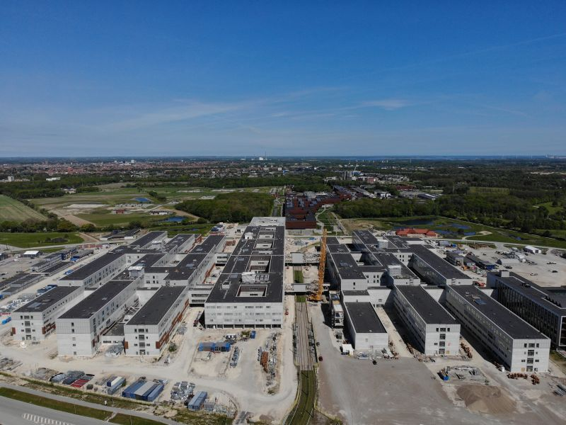
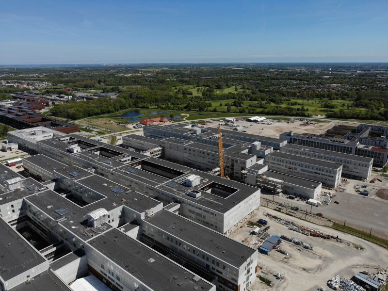
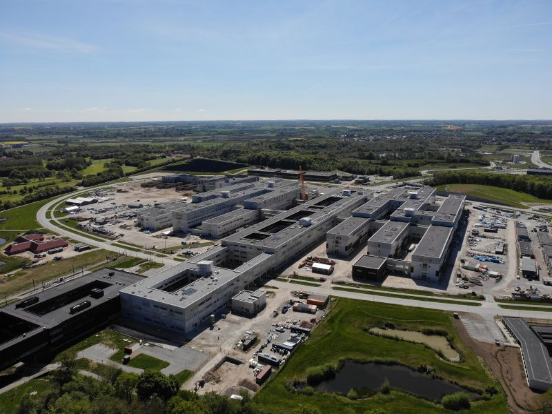
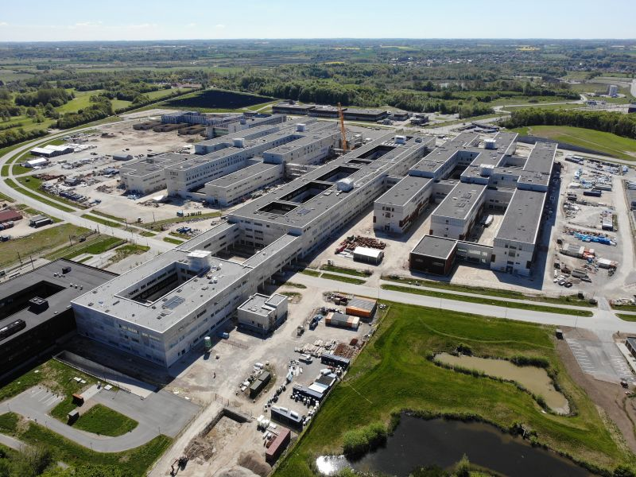
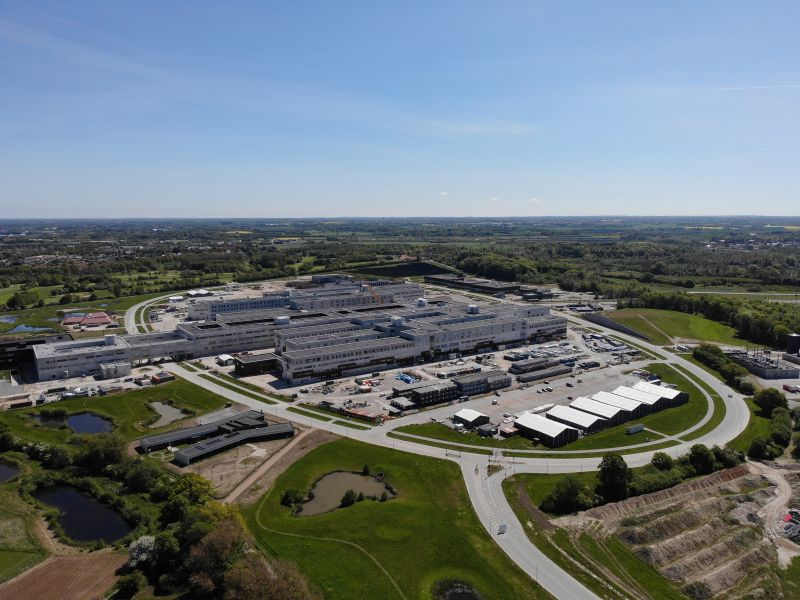
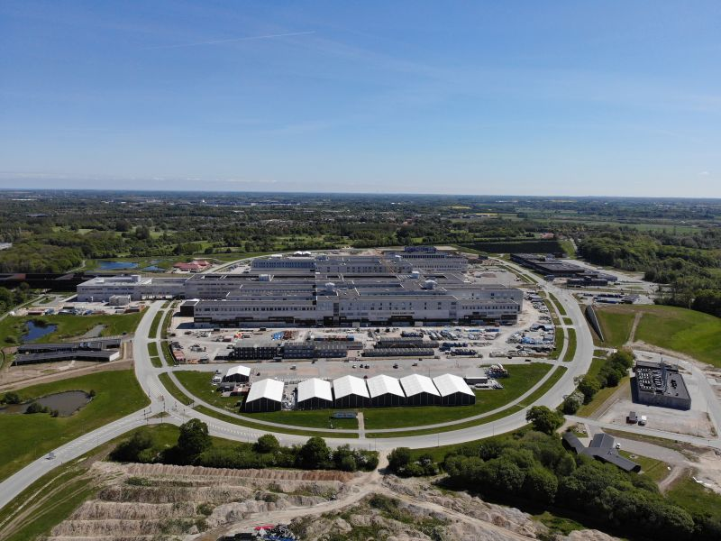
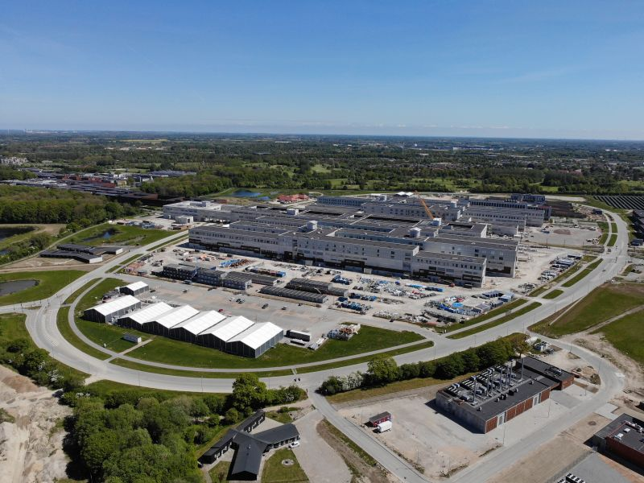

About Me
Hello! I'm Iulian Apostu, a civil engineer with experience in quality assurance, facility operations, and project management. I currently contribute to the construction of one of Europe’s largest new hospitals (OUH), in Odense, Denmark. I'm passionate about continuous improvement, sustainability, and technology.
Career Highlights
- QA/QC Lead at Odense Hospital Project Team (2023–Present)
- Facilities Manager & Project Manager at Artifex SRL
- Project & Sales Manager roles across Romania
Skills & Certifications
Preventive Maintenance · Root Cause Analysis · Quality Engineering · SAP ERP · ISO 9001 Lead Auditor · Agile · Advanced Excel
OUH Project Photos







Contact
Email: iulian.apostu@gmail.com
LinkedIn: linkedin.com/in/iulian-apostu
Location: Vejle, Denmark